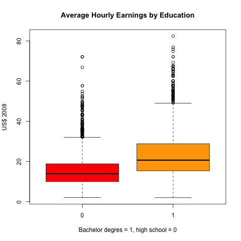

Empirical Exercise 3.1
Table of Contents
Now we can show how to use R to do some statistical analysis. This demonstration answers the questions of Empirical Exercise 3.1 at the end of Chapter 3. Furthermore, we carry out this exercise in the format of reproducible research. That means, we should accomplish they following tasks in answering the problem:
- using R to compute the statistics asked in the questions
- including R code and the results of running the code in the answer, and
- describing our work and answers in plain language along with code and numerical answers.
1 A description of the problem
Empirical exercise 3.1 concerns the relationship between average
earnings and education levels, using the data set from the 1992 and
2008 Current Population Survey (CPS). Specifically, we want to see
whether the average hourly earnings (ahe) are different between
workers with a bachelor degree and those with only high school
diploma (bachelor).
2 Answers to the questions
Question (a)
Compute the sample mean for average hourly earnings (ahe) in 1992 and
in 2008. Construct a 95% confidence interval for the population means
for ahe in 1992 and 2008 and the change between 1992 and 2008
Read the data
The first thing first is of course read the data correctly from the
Stata file data/cps92_08.dta, which can be read by the function
read.dta() in the package of foreign.
library(foreign) cpsdat <- read.dta("data/cps92_08.dta") head(cpsdat)
year ahe bachelor female age 1 1992 11.188811 1 0 29 2 1992 10.000000 1 0 33 3 1992 5.769231 0 0 30 4 1992 1.562500 0 0 32 5 1992 14.957265 1 0 31 6 1992 8.660096 1 1 26
Calculate the sample means of average hourly earnings in 1992 and 2008
There are many ways to compute the sample means in 1992 and 2008, respectively. First, to make you more familiar with the R language, we compute them in a very basic way. Then, we show how to get the same results with some powerful functions.
# extract the data for average hourly earnings in 1992 and 2008 ahe.92 <- cpsdat$ahe[cpsdat$year == 1992] ahe.08 <- cpsdat$ahe[cpsdat$year == 2008] mean.ahe.92 <- mean(ahe.92); mean.ahe.92 mean.ahe.08 <- mean(ahe.08); mean.ahe.08
[1] 11.62637 [1] 18.97609
The average hourly earnings are 11.63 dollars
in 1992 and 18.98 dollars in 2008.
Construct the confidence intervals
Recall that a 95% confidence interval for the population mean can be constructed as \(\overline{Y} \pm 1.96 SE(\overline{Y})\) and \(SE(\overline{Y})\) is computed as \(s_Y / \sqrt{n}\).
# the sample variance sd.ahe.92 <- sd(ahe.92) sd.ahe.08 <- sd(ahe.08) n.92 <- length(ahe.92) n.08 <- length(ahe.08) # the standard error se.ahe.92 <- sd.ahe.92 / sqrt(n.92) se.ahe.08 <- sd.ahe.08 / sqrt(n.08) # 95% confidence interval # the 95% critical value from a normal distribution cv.95 <- qnorm(0.975) lower.lim.92 <- mean.ahe.92 - cv.95 * se.ahe.92 lower.lim.08 <- mean.ahe.08 - cv.95 * se.ahe.08 upper.lim.92 <- mean.ahe.92 + cv.95 * se.ahe.92 upper.lim.08 <- mean.ahe.08 + cv.95 * se.ahe.08
The 95% confidence interval for ahe in 1992 is
(11.5, 11.75), and
that in 2008 is (18.75,
19.2).
Alternative methods to calculate the sample means and confidence intervals
In the above example, to compute the sample averages in 1992 and 2008, we write code separately for each year, which can be done more easily in R.
We can compute the averages for each year using the function
aggregate(), which splits the whole data base into two parts by the
values of year. Then, for each part we compute the average by
specifying the argument FUN to be mean, i.e., specifying the
function to be used for each part as the mean() function. Also, in
this case, we use ~ to specify a formula that means that we split
ahe by year.
# Use aggregate() to compute the means in both years ahe.means <- aggregate(ahe ~ year, FUN = mean, data = cpsdat) ahe.means
year ahe 1 1992 11.62637 2 2008 18.97609
The confidence interval can be extracted from the results of the
t.test() function, which is a list.
# t test for ahe in 1992 t.ahe.92 <- t.test(ahe.92); t.ahe.92$conf.int # t test for ahe in 2008 t.ahe.08 <- t.test(ahe.08); t.ahe.08$conf.int # test for the change between 1992 and 2008 t.ahe.diff <- t.test(ahe.08, ahe.92); t.ahe.diff
[1] 11.50019 11.75254 attr(,"conf.level") [1] 0.95 [1] 18.74975 19.20244 attr(,"conf.level") [1] 0.95 Welch Two Sample t-test data: ahe.08 and ahe.92 t = 55.597, df = 12065, p-value < 2.2e-16 alternative hypothesis: true difference in means is not equal to 0 95 percent confidence interval: 7.090601 7.608853 sample estimates: mean of x mean of y 18.97609 11.62637
The confidence interval of the change in average hourly earnings
between 1992 and 2008 is (7.09,
7.61).
Question (b)
Now we need to adjust the average hourly earnings in the 1992 dollars
to the 2008 dollars with the inflation rate, computed as
CPI2008/CPI1992.
# CPI in 1992 and 2008 cpi.92 <- 140.3 cpi.08 <- 215.2 # Inflation adjustment inflator <- cpi.08 / cpi.92 cpsdat$ahe.adj <- with(cpsdat, ifelse(year == 1992, ahe * inflator, ahe))
In the code block above, we first use the function with() to attach
the data frame cpsdat within its own environment so that when we
refer to variables in cpsdat, such as ahe and year, we do not
need to write cpsdat$ and every time we use its variables.
The function ifesle() set the values of ahe based on the
condition year == 1992. If the condition is true, we do ahe *
inflator; if not, leave ahe as it is.
Then we repeat what we've done in Question (a) with the inflation-adjusted earnings in 1992.
ahe.92.adj <- with(cpsdat, ahe.adj[year == 1992]) mean.ahe.92.adj <- mean(ahe.92.adj) t.ahe.92.adj <- t.test(ahe.92.adj) t.ahe.diff.adj <- t.test(ahe.08, ahe.92.adj)
- The sample average of the inflation-adjusted earnings in 1992 is
17.83in the 2008 dollars. - The confidence interval for the inflation-adjusted average hourly earnings in 1992 is
(
17.64, 18.03). - The confidence interval for the change between 1992 and 2008 is
(
0.85, 1.44).
Question (c)
If we are interested in the change in workers' purchasing power, the results with the inflation-adjusted earnings should be used in comparison.
Question (d)
Now let's compute the average earnings for high school graduates and
college graduates with the 2008 data. First thing to do is to select
the 2008 data from cpsdat using the function subset()
# select data in 2008 cps08 <- subset(cpsdat, year == 2008, select = c(year, ahe, bachelor)) # calculate means ahe.educ.08 <- aggregate(ahe ~ bachelor, FUN = mean, data = cps08) # select ahe and filter by bachelor ahe.high.08 <- with(cps08, ahe[bachelor == 0]) ahe.bach.08 <- with(cps08, ahe[bachelor == 1]) # construct confindence interval t.ahe.high.08 <- t.test(ahe.high.08) t.ahe.bach.08 <- t.test(ahe.bach.08) t.ahe.gap.08 <- t.test(ahe.bach.08, ahe.high.08)
- The mean of the average hourly earnings of high school graduates in
2008 is
15.33dollars with the 95% confidence interval (15.09, 15.57) - The mean of the average hourly earnings of college graduates is
22.91dollars with the 95% confidence interval (22.56, 23.26 - The 95% confidence interval of the gap in earnings between the two
groups is
(
7.15, 8)
We can create a boxplot to compare the means and confidence intervals of average hourly earnings between high school graduates and college graduates.
boxplot(ahe ~ bachelor, data = cps08,
main = "Average Hourly Earnings by Education",
col = c("red", "orange"),
xlab = "Bachelor degres = 1, high school = 0",
ylab = "US$ 2008")
